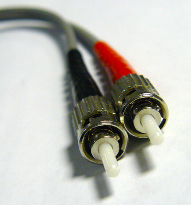

首頁 <<
Previous part1
PCH11:Fiber-Optic-Cable/光纖電纜
overview/概觀
In this module, we’re going to discuss the various types of network media. We will begin with fiber-optic cable and then discuss twisted pair cable and coaxial cable. For each of these cable types, we will discuss appearance, characteristics, and types of connectors, as well as speed and limitations.
在本模塊中，我們將會討論到各種類型的網絡媒體。我們將會從光纖電纜開始，然後討論雙絞線電纜和同軸電纜。對於每種電纜的類型，我們將會討論連接器的外觀，特性和類型，以及速度和限制。
Fiber-Optic-Cable/光纖電纜

Fiber-optic cables are constructed by using a glass core at the center of the cable that is surrounded by cladding. In order to send data from one end of the cable to the other, light from a light-emitting diode (LED) or laser is used to transmit the signal down the glass fiber at the center of the cable. Because the data is being transmitted using light, it is immune to the effects of electromagnetic interference (EMI) that impact traditional copper-based cables, such as twisted pair and coaxial cables. Fiber-optic cables possess the ability to send the data a very far distance (many miles) without the use of a repeater. They also can carry a significant amount of data due to their large bandwidth and the information traveling at light speed. Their bandwidth can be measured in gigabits or even terabits per second. There are two types of fiber cables: multimode and single-mode fiber.
光纖電纜是通過在電纜的中心使用玻璃芯製成的，該玻璃芯被層層圍繞。
為了將數據從電纜的一端發送到另一端，使用來自發光二極管（LED）或是使使用雷射的光線沿電纜中心的玻璃纖維向下傳輸信號。
由於數據是通過光傳輸的，因此不受電磁干擾（EMI）的影響，這些電磁干擾會影響傳統的銅基電纜，如雙絞線和同軸電纜。
光纖有無需使用中繼器就可傳輸到很遠的距離（許多英里）發送數據的能力。由於它們的大帶寬和以光速傳播的信息，此外它們還可以攜帶大量數據。
它們的帶寬可以以每秒1GB甚至是1TB的速度來測量。而光纖電纜有兩種類型：多模光纖與單模光纖。
首頁 <<
Previous